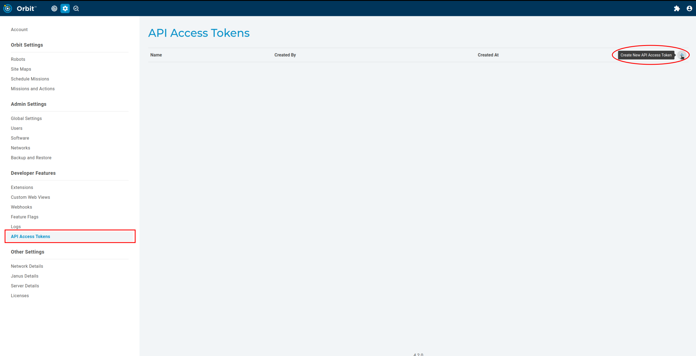
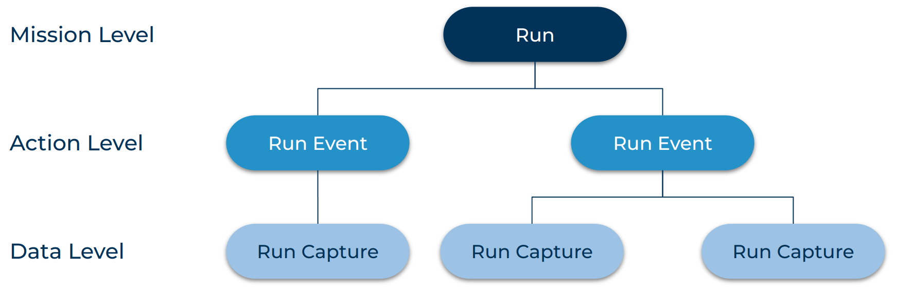
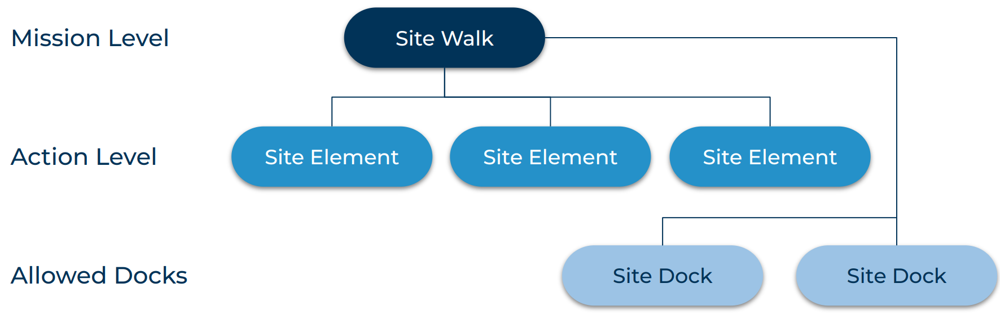

Orbit API
The Orbit API is a web API served by an Orbit instance. The API is interacted with by sending HTTPS requests to a number of resource endpoints. Each resource endpoint is prefixed with the API route /api/v0/. For example, a list of run_events may be retrieved by sending a GET request to /api/v0/run_events. A complete URL would add this to the URL of the Orbit instance - e.g. https://my-orbit.com/api/v0/run_events/.
The Orbit API is language-agnostic and may be programmed against using any programming language that supports sending HTTP requests.
For a complete list of resources and their methods, see the Orbit API Reference.
Contents
Authentication
Resources can only be requested by authorized Orbit users. In order to be authorized, users need to provide headers with an API token obtained from an Orbit instance’s admin settings.

A variety of options are available with different authorities. Pick the one that is most appropriate for you or your application.

Make sure to copy and save the token in a safe place as this token will not be accessible again.
To authorize with the obtained API token, send a GET request to the authentication endpoint at /api/v0/api_token/authenticate:
"""Authenticate with an API token obtained from an Orbit instance."""
import json
import requests
# Set API token in headers
headers = {'Authorization': 'Bearer ' + <MY ORBIT API TOKEN>}
# Check the validity of the API token
authenticate_response = requests.get(
f'https://{my-orbit.com}/api/v0/api_token/authenticate', headers=headers)
if authenticate_response.ok:
print('Client: Auth succeeded')
else:
print('Client: Auth failed: {} Please, obtain a valid API token from the instance!'.
format(authenticate_response.text))
Now that we have a valid API token, we can use it to request resources. When requesting, the API token needs to be provided as part of the headers argument:
"""Use the cookies to fetch some robots. The same authorization strategy is used for other http methods."""
robots_response = requests.get(f'https://{hostname}/api/v0/robots', headers=headers, verify=False)
if not robots_response.ok:
print(f'Encountered a problem while requesting robots: {robots_response.text}')
else:
robots_json = robots_response.json()
print("Fetched robots!")
The API token must be provided in every request aside from the request. If an unauthorized request is made, a 401 response is sent. Likewise, if an API link is visited in the browser without the user being authorized, Forbidden is shown.
Orbit Object Structure
Data
Below is a simple example of the data structure of a mission run that was uploaded from a robot to Orbit. This mission has two RunEvents (actions) and three total data points (RunCaptures), two of which are associated with a single action. Runs may have many actions while RunEvents may have many RunCaptures, much like missions can have many actions, and each action can save many pieces of data.

Run (Mission Archive)
A Run represents a period of robot operation. Both teleoperation and autonomous operations are represented as Runs. They provide other information such as: status, start/end times, action count, and robot name. It is important to to note that the end time may not be populated when a mission is currently in progress so it is a good idea to check for this. Runs can have many RunEvents which depict the output from each action that transpired during the operation period, these RunEvents are linked to the Run by the Run’s uuid.
RunEvent (Action Archive)
A RunEvent represents the output of an action executed during a Run. It contains all the RunCaptures associated with the action. A RunEvent can only be associated with a singular Run. It also contains a list of all RunCaptures (data captures) associated with the action. RunCaptures are linked to the RunEvent by the RunEvent’s uuid.
RunCapture (Data Archive)
A RunCapture describes a data point captured during a particular RunEvent. There can be many RunCaptures for a given RunEvent. A RunCapture can only be linked to one RunEvent through the runEventUuid field.
Note
It is best practice to query and refer to Runs, RunEvents, and RunCaptures with their uuid as this is a unique identifier. Using the names of these objects may not correctly refer to the desired object as there may be duplicates. Ex: the same mission run twice will have two Runs with the same missionName field.
Missions
Below is a simple representation of what a mission looks like in the context of Orbit.

SiteWalk (Mission)
A SiteWalk describes a series of tasks that define autonomous robot operation. It contains SiteElements and SiteDocks together with other parameters that define autonomous operation. A SiteWalk has a list of SiteElements which are attempted in sequential order. SiteWalks also have a list of SiteDocks that define which charging station locations are allowed to be used during a specific SiteWalk. The robot will choose which SiteDock is best at runtime.
SiteElement (Action)
A SiteElement describes what a robot should do and where to do it. SiteElements are normally associated with a specific waypoint where the action is to be performed. These performed actions are then represented as RunEvents once the data is transferred to Orbit. SiteElements can be utilized in many SiteWalks.
SiteDock (Charging Station)
A SiteDock is a representation of a robot’s docking station. The robot can utilize SiteDocks during and after SiteWalks to ensure the battery never runs out.
The same SiteDock can be used in multiple SiteWalks, but as of 4.1.0, users are responsible for ensuring the physical dock is not taken if they need the robot to dock there. This may change in the future (and we may forget to update this page accordingly).
Facets
Facets are API endpoints that return a more specific output. Facets can simplify client code and reduce network traffic by returning useful descriptions of different objects. For example, the /runs/facets/missions returns every unique mission that produced a Run, a count of how many times the mission ran, and the last start time.
See Orbit API Reference for a full list of facets.
Orbit API and the Python SDK
The Spot Python SDK includes a bosdyn-orbit Python package and client implementation for the Orbit API. The bosdyn-orbit package documentation is here.
The package provides OrbitClient - an implementation for the Orbit API. Once instantiated and authenticated, it provides a number of helpful methods which abstract away the details of HTTP to simplify building programs with the Orbit API. Please refer to the Hello Orbit SDK example to get started developing with the Orbit API Python client.
Deprecation Warning
Following the rebranding of “Scout” to “Orbit” in 4.0.0, the pre-existing Python package bosdyn-scout is deprecated. All SDK examples now use bosdyn-orbit instead. Any previous applications that used bosdyn-scout will continue to work. It is highly recommended that bosdyn-orbit be used moving forward.